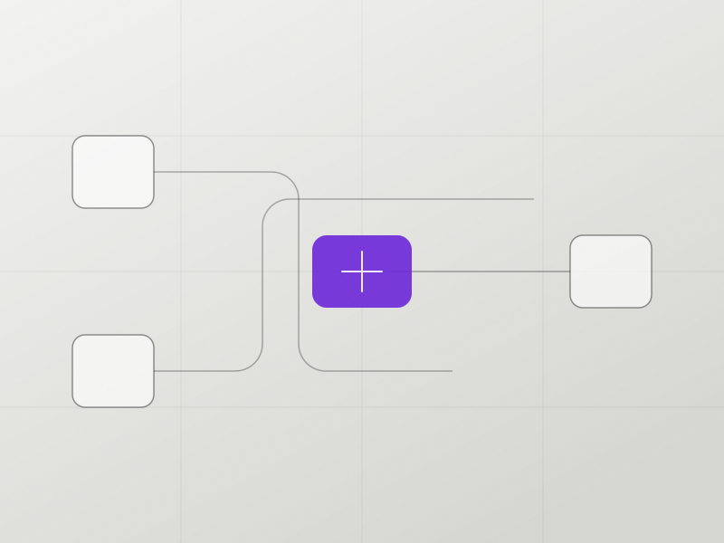
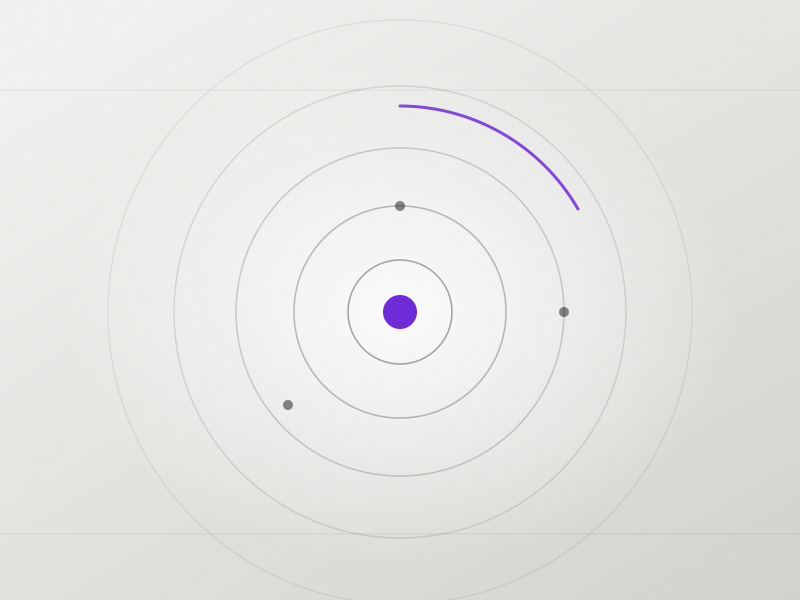
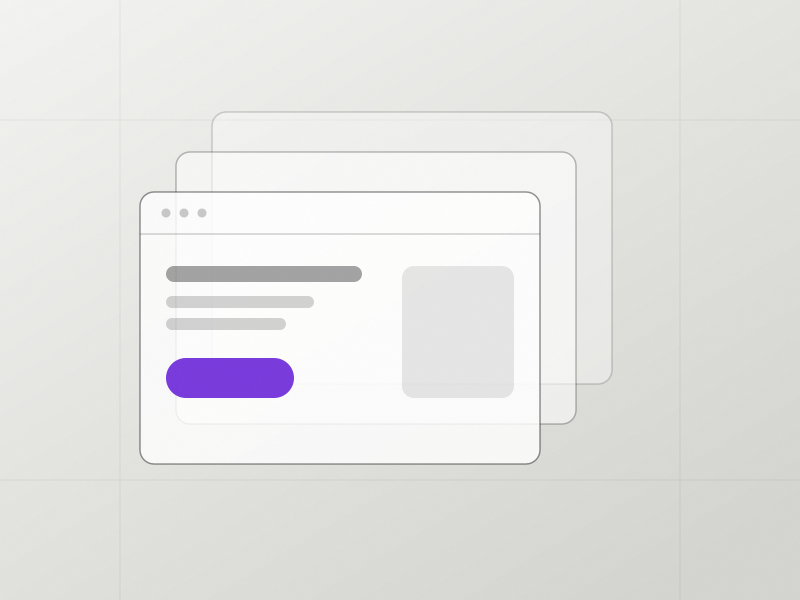

Automatisation & agents IA pour PME
Faites passer votre PME aux outils de demain.
Le constat
Vos équipes passent trop de temps sur des tâches que l'IA peut faire.
Chaque semaine, des heures disparaissent dans des gestes répétitifs. Ce n'est pas un problème d'effort : c'est un problème d'outillage.
-
Des tâches répétitives chronophages
Saisie, devis, relances, reporting : les mêmes gestes, chaque semaine, à la main.
-
Des outils qui ne se parlent pas
Un devis dans un tableur, un client dans un mail, une facture ailleurs. Et vous au milieu.
-
Un manque de visibilité en ligne
Vos futurs clients cherchent, trouvent un concurrent. Vous n'êtes simplement pas là.
Le principe
De vos outils au temps gagné.
Services
Trois leviers, un seul objectif : vous rendre du temps.
Automatisation
Reliez vos outils, supprimez la double saisie, et laissez tourner ce qui n'a pas besoin de vous.
- Devis et factures pré-remplis
- Relances programmées automatiquement
- CRM et tableur toujours à jour
- Reporting hebdomadaire sans saisie

Agents IA
Des assistants qui répondent, qualifient et rédigent à votre place — y compris quand vous êtes débordé.
- Réponse immédiate aux demandes entrantes
- Qualification : budget, urgence, service concerné
- Rédaction de premières réponses
- Plus aucun prospect laissé sans réponse

Visibilité web
Un site qui convertit et une présence en ligne qui vous rend trouvable par vos futurs clients.
- Site vitrine rapide et lisible
- Pages pensées pour la conversion
- Fiche Google renseignée et suivie

Méthode
Comment ça marche
Quatre étapes, zéro jargon. Vous savez à tout moment où vous en êtes et ce que ça coûte.
-
Audit gratuit
On identifie ensemble vos tâches à fort potentiel d'automatisation. 30 minutes, en visio.
-
Devis sur mesure
Un plan clair et chiffré, avec le gain de temps estimé pour chaque automatisation.
-
Mise en place
On construit et on connecte. Vos équipes sont formées en même temps.
-
Suivi
Ajustements, mesure des résultats et accompagnement dans le temps.
Résultats
Ce que ça change concrètement.
Ordres de grandeur observés sur des automatisations de PME. Vos chiffres réels sont estimés pendant l'audit.
~0h
gagnées par semaine
Soit plus d'une journée de travail rendue à votre équipe.
−0%
de tâches manuelles
Sur les process ciblés : saisie, relances, reporting.
<0mois
pour rentabiliser
Le temps gagné couvre l'investissement de départ.
À propos de nous
Une équipe d'ingénieurs, pas une agence anonyme.
Nous sommes étudiants ingénieurs à l'École Nationale de l'Aviation Civile (ENAC). Notre formation nous apprend à piloter des systèmes complexes et à optimiser des flux. Nous transposons cette exigence de précision dans votre entreprise.
-
Automatisations & intégrations
Gabriel
-
Agents IA & traitement de données
Oscar
Vous parlez directement aux personnes qui construisent. Pas d'équipe intermédiaire, pas de vocabulaire technique inutile.
Avis clients
Ils nous font confiance.
Une refonte de notre site et un vrai travail sur le référencement naturel : nous sommes passés d'environ 60 à près de 150 pages positionnées sur Google, et nous avons atteint la 2ᵉ place sur notre requête la plus stratégique. Professionnel, autonome et impliqué — une collaboration que je recommande volontiers.
On a connecté nos outils en quelques semaines. Fini la double saisie : devis, relances et reporting tournent sans nous. Un vrai gain de temps au quotidien.
Les demandes entrantes arrivent enfin qualifiées. On répond plus vite, on relance au bon moment — et ça se voit sur les signatures.
Accompagnement carré du début à la fin : audit clair, mise en place rapide, suivi au rendez-vous. On a surtout gagné en sérénité.
FAQ
Les questions qu'on nous pose le plus.
Oui, à partir du moment où au moins une personne répète les mêmes tâches chaque semaine. Le sweet spot se situe entre 5 et 100 salariés : assez de volume pour que l'automatisation paie, assez de souplesse pour la déployer vite.
L'audit est gratuit. Ensuite, vous recevez un devis sur mesure, chantier par chantier, avec le gain de temps estimé en face de chaque ligne. Vous choisissez ce que vous lancez — et vous pouvez commencer par une seule automatisation.
Non, c'est même l'inverse. Le principe est de faire parler entre eux les outils que vous utilisez déjà. On ne remplace un logiciel que s'il vous bloque vraiment, et jamais sans en avoir discuté.
La première automatisation tourne généralement en une à deux semaines après l'audit. On commence volontairement par un chantier court et visible, pour que le gain soit mesurable avant d'aller plus loin.
On définit ensemble ce qui peut circuler et ce qui reste chez vous. Les accès sont limités au strict nécessaire, documentés, et révocables à tout moment. Vous restez propriétaire de vos automatisations.
Contact
Prêt à gagner du temps dès ce mois-ci ?
Décrivez-nous la tâche qui vous coûte le plus d'heures. On vous répond sous 24 h avec une première piste — même si on ne travaille pas ensemble.
- 30 minutes en visio, sans préparation
- Une liste priorisée de ce qui peut être automatisé
- Aucun engagement, aucune relance commerciale
Vous préférez réserver directement ? Choisir un créneau
Demande bien reçue.
Merci ! On revient vers vous sous 24 h avec une première piste d'automatisation.